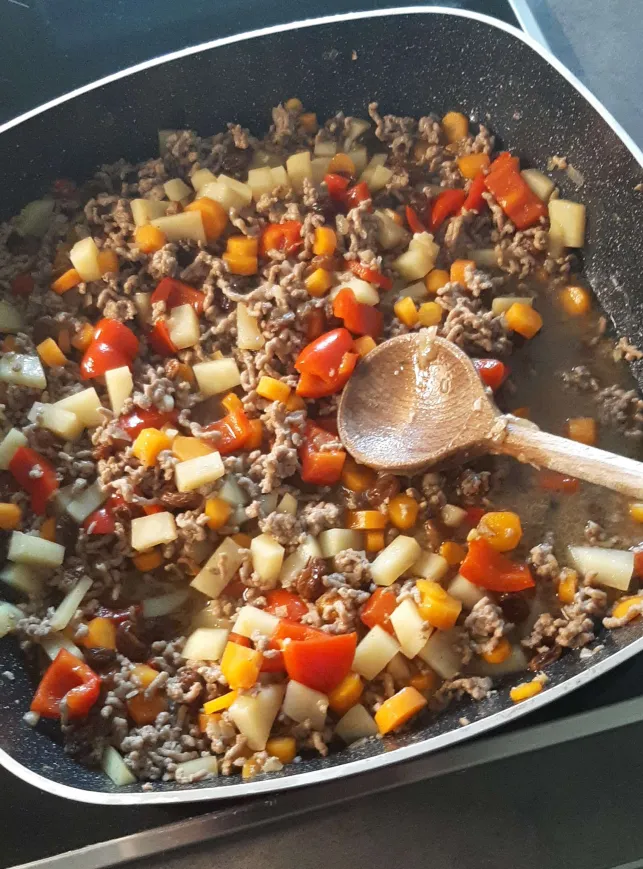

Kometro's fantastic Empanadas
A south american classic
An Empanada is a baked or fried pastry from southern america, that makes for a great and filling main dish.
It has many variations and can be filled with basically any ingredients you like.
It is usually served accompanying a often selfmade dip, which I also have a recipe for. So check it out here!
In this recipe I will only cover one way to make your filling, but you can try something entirely different later.
The ingredients you'll need
for the dough:
- 3 cups all purpose flour
- 1 tsp salt
- 1 tbsp sugar
- 1 tsp baking powder
- 1 cup cold butter
- 1/3 cup ice cold water
for the filling:
- 1/4 cup chopped onion
- 1/4 cup minced garlic
- 500 grams minced meat (i tried both beef and pork, but others should work aswell)
- 3 tbsp soya sauce
- 2 tbsp fish sauce
- 1 cup diced carrot
- 1 cup diced potato
- 1/2 cup bell pepper
- 1/2 cup raisins (might seem weird but they're great)
- An appropriate amount of oil for your pan
- Salt and Pepper
- 1/2 cup chicken stock
Making the dough
- mix the flour with the salt, sugar and baking powder in a bowl
- add the butter and mix till mixed
- add the water and properly mix
- if the dough is brittle, slowly incorporate more water till it's not
- now roll the dough into a ball and wrap it with cling film
- let it chill in the fridge for 30 minutes
Making the filling

- saute the onion in your pan
- add the garlic
- add the minced meat and season with salt and pepper
- let it cook til it's somewhat done
- add the remaining ingredients and cook til everything's done
Making the Empanadas
- cover a surface in flour
- roll out the dough in the surface
- cut circles out of the dough using f.e. a cup (the circles should be about palm sized)
- put about a tablespoon of filling on each circle
- fold the circles into a half moon shape and seal the edges
- now comes a hard part: you have to fold over the edges into lots of small triangles (it should look somewhat like the picture above)
Now you can either bake them in an oven for 15 minutes or (as I prefer to do) you can fry them in a pan with a somewhat large amount of oil (the empanadas should be able to be half submerged in the oil)
Now your empanadas should be ready to serve! But if you're looking for a dessert to serve after, you can take a look at my